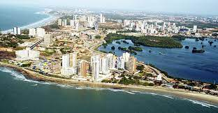
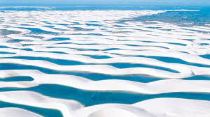

Imagens
 Uma vista deslumbrante da Ilha do Amor - Maranhão.
Ilha do Amor
Apesar de existirem muitos apelidos que falem da cidade, os seus moradores a chamam simplesmente por Ilha do Amor. Com muitos pontos turísticos, rica cultura popular e passeios naturais, a capital maranhense acabou ficando conhecida pelos seus belos e românticos cenários. Fundada no século 17 por portugueses, o território da ilha foi invadido por franceses e holandeses que acreditavam que o local era a entrada para as riquezas da região do rio Amazonas. Na época, a única construção da cidade era o Forte de São Luís, nomeado pelos franceses em homenagem ao monarca Luís 9, o rei santo. Porém, para deixar na memória e na eternidade a expulsão dos franceses na Batalha de Guaxenduba, em 1615, os portugueses decidiram que o nome continuaria o mesmo.
A história
É a única capital brasileira fundada por franceses, no dia 8 de setembro de 1612,[7] posteriormente invadida por holandeses[8] e, por fim, colonizada pelos portugueses. Localiza-se na ilha de Upaon-Açu no Atlântico Sul, entre as baías de São Marcos e São José de Ribamar, no Golfão Maranhense. Em 1621, quando o Brasil foi dividido em duas unidades administrativas — Estado do Maranhão e Estado do Brasil —, São Luís foi a capital da primeira unidade administrativa. No ano de 1997, o centro histórico da cidade foi declarado patrimônio cultural da humanidade pela UNESCO.